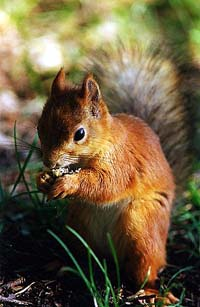

Білка Бурундикова чи червона білка, мешкає у Північній Америці. Ареал простягається від Аляски та Квебеку на південь по Скелястим ним до Нью-Мексико і включає також ліси в Аппалачах. Другий вид поширений від Британської Колумбії до Каліфорнії.
За способом життя бурундукові білки дуже близькі до звичайної білки, але будовою та деякими деталями біології вони значно відрізняються від усіх деревних білок.